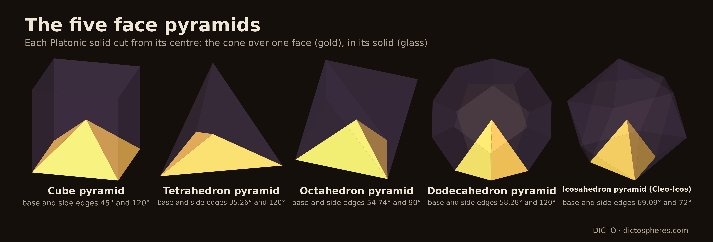
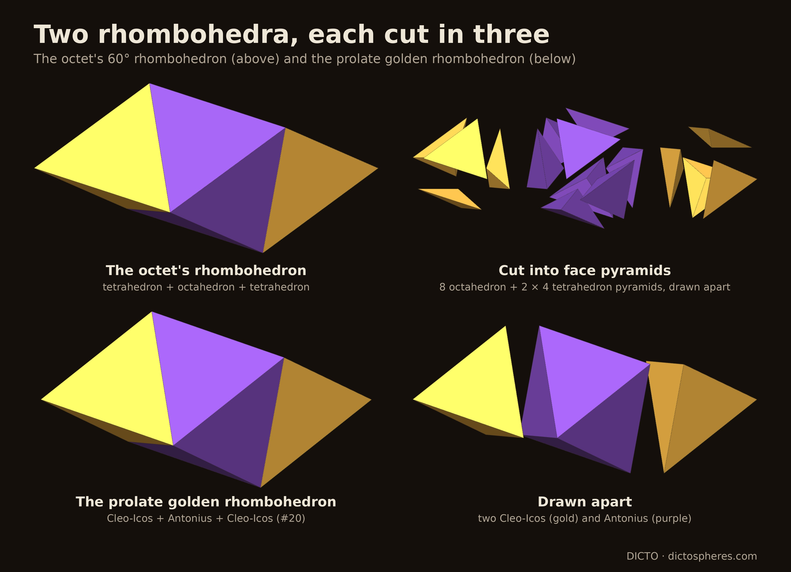

Which face pyramids of the Platonic solids fill space: alone only the cube's, in pairs only the tetrahedron's with the octahedron's, in equal numbers; the icosahedron's, the Cleo-Icos, needs a partner that is not a face pyramid

"Among surfaces it is agreed that there are three figures which fill the place that contain them, the triangle, the square and the hexagon; among solids only two, the pyramid and the cube" (Aristotle, On the Heavens III.8, 306b, in Guthrie's translation as quoted by Lagarias and Zong [1]). If "the pyramid" is the regular tetrahedron, the claim is wrong: its dihedral angle α = arccos(1/3) ≈ 70.53° is not a whole fraction of 360°, and five tetrahedra round an edge leave 7.36° [1]. Lagarias and Zong trace the long correction [1]: Simplicius and Averroës held that twelve regular tetrahedra fill space round a point; others said twenty; Thomas Bradwardine observed that the icosahedron cuts from its centre into twenty congruent tetrahedra but could not decide whether they are regular; Paul of Middelburg pointed out that they are not; and Maurolico (1529) stated that cubes alone, and tetrahedra together with octahedra, fill space. Twenty regular tetrahedra can indeed meet at a point, with small gaps between them [1]: the near miss behind the commentators' twenty.
DICTO's question goes the other way: could Aristotle's pyramid have been Bradwardine's tetrahedron, the icosahedron's own pyramid, which DICTO calls the Cleo-Icos, reached from his CLEO piece [2, 3]? We widen it to all five face pyramids: for a Platonic solid with centre O, the face pyramid over a face F is the convex hull of F and O (Figure 1). Its dihedral angle along a base edge is half the solid's dihedral angle, since the plane through O and the edge bisects it; along a side edge (from O to a corner) it is 360°/q, where q faces meet at that corner. These are checked exactly in pyramid_checks.py.
| Face pyramid | Base edges | Dihedral along a base edge | Side edges | Dihedral along a side edge |
|---|---|---|---|---|
| cube | 4 | 45° = π/4 | 4 | 120° (3 faces at a corner) |
| tetrahedron | 3 | α/2 ≈ 35.26° | 3 | 120° |
| octahedron | 3 | (π − α)/2 ≈ 54.74° | 3 | 90° (4 faces) |
| dodecahedron | 5 | θD/2 ≈ 58.28° | 5 | 120° |
| icosahedron (Cleo-Icos) | 3 | θI/2 ≈ 69.09° | 3 | 72° (5 faces) |
Table 1. The five face pyramids. α = arccos(1/3), θD = arccos(−1/√5) and θI = arccos(−√5/3) are the dihedral angles of the tetrahedron, dodecahedron and icosahedron; the octahedron's is π − α (its cosine is −1/3) and the cube's π/2.
Lemma 1 (angles round an edge). Let space be tiled by convex polyhedra, finitely many meeting any bounded set, and let e be an edge of a tile P. For all but finitely many points x of e, the tiles containing x have x either in the relative interior of an edge on the line of e, or in the relative interior of a face whose plane contains that line; their dihedral angles at x add up to 2π, or to π when one tile has x inside a face (the edge lies on a face).
Proof. Only finitely many tiles meet a neighbourhood of e. Leave out of e the finitely many points that are corners of these tiles, or where an edge of one of them crosses the line of e. At any other point x of e, no tile has x in its interior (it would overlap P), and a tile with x inside an edge has that edge on the line ℓ of e. If a tile T has x inside a face, near x it is a half-space; P lies in the other closed half-space, and so does the line ℓ through x, so the plane contains ℓ. Near x every tile is therefore a wedge or a half-space bounded by planes through ℓ, and in the plane at right angles to ℓ through x they become sectors that cover a disc with disjoint interiors: their angles add up to 2π. A half-space counts π, and there is at most one, since two would leave no room for P. ∎
No face-to-face condition is needed. Now let h be a map from the angles to the rationals that is additive with rational coefficients and has h(π) = 0. At every such point x the values of h at the dihedral angles there add up to h(2π) = 0 or h(π) = 0. Such maps exist with any values on α, θD and θI, because:
Lemma 2. π, α, θD and θI are linearly independent over the rationals.
Proof. cos² α = 1/9, cos² θD = 1/5 and cos² θI = 5/9, so tan α = 2√2, tan θD = −2 and tan θI = −2/√5: all three are pure geodetic angles in the sense of Conway, Radin and Sadun [4], with tangents rational multiples of √2, √1 and √5, three different square classes. None is a rational multiple of π: if θ = (m/n)π then eiθ is a root of unity and 2 cos θ an algebraic integer, but (2 cos θ)² is 4/9, 4/5 and 20/9, not integers. (Theorem 2 of [4] writes each angle as a rational multiple of π plus their basis angles; this shows the basis part is not zero.) Suppose a rational combination q1α + q2θD + q3θI is a rational multiple of π. By the Splitting Theorem of [4, Theorem 3], so is each part whose tangents are rational multiples of one square root: q1α, q2θD and q3θI separately; hence q1 = q2 = q3 = 0. ∎
The angles of Table 1 in this basis: the cube pyramid's are π/4 and 2π/3, the side edges' 2π/3, π/2 and 2π/5, all rational multiples of π (h = 0); the base edges carry ½α (tetrahedron), ½π − ½α (octahedron), ½θD (dodecahedron) and ½θI (Cleo-Icos). This is the argument of #20 for the Cleo-Icos alone [3, §5.6–5.7], carried out for all five and made rigorous with [4].
Proof. (a) Choose h(θD) = 1 and h(π) = h(α) = h(θI) = 0. Then the base edges of a dodecahedron pyramid carry h = ½, and every other dihedral angle of every pyramid carries h = 0. At a point x of a base edge of a dodecahedron pyramid, chosen as in Lemma 1, the values of h add up to at least ½, not 0: a contradiction. The same with h(θI) = 1 excludes the Cleo-Icos. (b) Choose h(α) = 1, the rest 0: a tetrahedron pyramid's base edges carry +½, an octahedron pyramid's −½, all other angles 0. Without octahedron pyramids, a base edge of a tetrahedron pyramid gives a sum of at least ½; without tetrahedron pyramids, a base edge of an octahedron pyramid gives at most −½. ∎
Corollary. Alone, only the cube pyramid fills space (six make a cube). In pairs with both kinds used, only the tetrahedron and octahedron pyramids do; pairs with the cube pyramid can only tile without their second piece, and every pair with the dodecahedron pyramid or the Cleo-Icos fails. The checks run Theorem 1's test over all 31 non-empty sets of the five pyramids: only {cube}, {tetrahedron, octahedron} and {cube, tetrahedron, octahedron} pass, and with all five allowed the dodecahedron pyramid and the Cleo-Icos are still excluded.
The octet cut up. The tetrahedron and octahedron pyramids do fill space, as Maurolico's tiling [1] cut from the centres. Two regular tetrahedra on opposite faces of a regular octahedron make a rhombohedron of 60° that tiles space by the face-centred cubic lattice [1]; the checks confirm it exactly with lattice vectors (1, 1, 0), (1, 0, 1), (0, 1, 1): octahedron 4/3 + 2 tetrahedra of 1/3 = the cell, 2. Cut from their centres they give 8 octahedron pyramids and 8 tetrahedron pyramids per cell, equal numbers (Figure 2, top), and round each edge of the octet, between 2 tetrahedra and 2 octahedra, 4 × α/2 + 4 × (π − α)/2 = 2π.
Proof. With h(α) = 1, Lemma 1 gives a sum of 0 at all but finitely many points of each edge. Integrate this sum along all edges inside the ball: Σ over tiles of Σ over their edges of h(angle) × (length of the edge inside the ball) = 0. A tetrahedron pyramid wholly inside contributes 3 × a × ½, an octahedron pyramid 3 × b × (−½); the tiles that meet the sphere are at most C′R² in number (bounded size, volume bounded below) and contribute a bounded amount each. ∎

By Theorem 1 the Cleo-Icos fills space with none of the five face pyramids. It does fill space with one partner that is not a face pyramid [3, §5.7]: the three lines from the icosahedron's centre to the corners of a face meet at arccos(1/√5) ≈ 63.43°, the angle of the golden rhombus, so they span a prolate golden rhombohedron, and the planes x + y + z = 1 and 2 (in coordinates along those lines) cut it into a Cleo-Icos at each sharp corner and Antonius in the middle, a trigonal antiprism of exactly 4 times the Cleo-Icos's volume (the rhombohedron is 6 times). Golden rhombohedra tile space by a lattice, so Cleo-Icos and Antonius fill space, two to one (Figure 2, below). The checks confirm this split exactly and give the counting map's view of it: along Antonius's 6 triangle edges the angle is π − θI/2 ≈ 110.91°, which with the Cleo-Icos's θI/2 makes a flat 180°, and along its 6 side edges the rhombohedron's 72° and 108°. With h(θI) = 1, edges weighted by length, a Cleo-Icos carries 3 × ½ and Antonius 6 × (−½), −2 times as much, which the two-to-one ratio balances (the Dehn invariant remark of [3]). The same cut of the 60° rhombohedron is the octet's tetrahedron + octahedron + tetrahedron [3]: in both, the middle third is the partner.
DICTO asked, too, how the whole Platonic solids fill space. His earlier exact work answers it for all five:
| Solid | Fills space with | Source |
|---|---|---|
| cube | alone | classical |
| tetrahedron, octahedron | each other, two tetrahedra to one octahedron (the octet truss) | classical; Maurolico (1529) [1] |
| dodecahedron | Dogstars: dodecahedra on alternate cubes of a cubic lattice, each a cube with six of Euclid's roofs [5]; the hole in each other cube is the Dogstar; the dodecahedra take (5 + √5)/8 ≈ 90.45% of space | tiling and Dogstar: Hart (1996) [6]; exact: The DICTO Sunstar, #42 [7] |
| icosahedron | DICTO's icosahedral octet: an icosahedron + 6 edge roofs (Admiral Caps) is the regular octahedron, so icosahedra (edge 1) with their roofs in the octet's octahedra, and icosahedra of edge 1/2 with corner and edge caps in its tetrahedra, fill space; the icosahedra take (175 − 75√5)/12 ≈ 60.79% | exact (released finding F21; not a separate paper) [8]; the icosahedron in the octahedron at the golden section is classical (Pacioli; Fuller's Jitterbug) |
Table 2. How each whole Platonic solid fills space with partners. The idea of F21 is DICTO's: "the same principle as the dodecahedron and roofs, but with six" [8].
The pattern is the same for both golden solids. Euclid builds the dodecahedron on a cube with a roof on each face [5]; the roofs are what let dodecahedra sit on a cubic lattice, and what is left is the Dogstar. DICTO moved the roofs to the icosahedron: six edge roofs make it an octahedron, which the octet already places. Theorem 1 says why such help is needed: a solid's face pyramids carry half its dihedral angle along each base edge, and only for the cube (π/2) is that angle a rational multiple of π; the tetrahedron's and the octahedron's cancel each other (α and π − α), while θD and θI cancel with nothing among the five.
We do not claim to know what Aristotle meant; Lagarias and Zong take "pyramid" to be the regular tetrahedron [1], and that is the usual reading. Within the reading DICTO asked about, the pyramid as a face pyramid of a regular solid, the answer is exact: Aristotle's two figures come out right only as the cube's own pyramid (trivially, since six make the cube) and as the tetrahedron's pyramid taken together with the octahedron's, which is Maurolico's correction [1] cut from the centres. Bradwardine's twenty tetrahedra of the icosahedron, the Cleo-Icos, cannot fill space with any face pyramid; they need Antonius.
In the sources checked (the full text of the 81 library sources with a text layer listed in the appendix, searched on 21 October 2026; the library's 173 link-only entries were not searched) we did not find a classification of the tilings by the face pyramids of the Platonic solids.
In studies/2026-10-21-aristotle-pyramids: pyramid_checks.py (exact arithmetic in ℚ(√5) with Python fractions; angles handled through cos² and the sign of cos; log pyramid-checks.log, 45 PASS, no FAIL): the solids' dihedral angles; every base and side angle of the five pyramids; the facts used in Lemma 2; the counting test over all 31 sets; the octet cell and its 8 + 8 pyramids; the golden rhombohedron, Cleo-Icos, Antonius and their angles. angle_relations.py (angle-relations.log): the angles to 80 digits and a PSLQ search finding no integer relation among π, α, θD, θI, evidence only, the proof being Lemma 2. Figures: aristotle_figs.py (float copies of the exact solids into the viewer of studies/2026-10-19-five-fold-octet), jewel-shots.mjs (Playwright, 2× pixel ratio) and aristotle_compose.py. The 2,187-piece patch of Cleo-Icos and Antonius is that of [3].
The library's manifests list 267 entries, of which 94 have a local file; these give the 81 distinct sources with a text layer listed below and 13 page images. The full text of the 81 sources was searched on 21 October 2026 for: Aristotle, De Caelo, On the Heavens, pyramid, fill space, space-filling, tile space, Dehn, dihedral angle, central pyramid, face pyramid, Maurolico, octet, tetrahedral-octahedral, golden rhombohedron, Cleo and Antonius. The relevant hits are Lagarias and Zong [1] (the history above), Conway, Radin and Sadun [4], the Dehn invariants of icosahedral tiles in Ogievetsky and Papadopolos, the tetrahedral-octahedral honeycomb (Wikipedia), and golden rhombohedra in Senechal, Dietl and Eschenburg and Kabai's demonstrations (all in the list below); none treats the face pyramids of the Platonic solids as tiles. The 13 page images without a text layer (the patents of Fuller, Snelson, Pearce, Baer, Hogan, Bergman and Lalvani, and Fedorov 1885) and the 173 link-only entries were not searched.
| Author(s) | Year | Title |
|---|